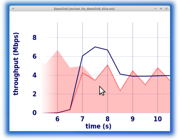

Instructor: Keith Winstein
Class meetings: Monday and Wednesday, 12:50 p.m.–2:05 p.m. in 50-52H
Office hours: Wednesday, 2:30 p.m.–3:30 p.m. in Gates 282
Piazza: [CS 344G on Piazza]

Official Course Description
Graduate project class on computer networking, emphasizing end-to-end applications and protocols. Students will propose and execute an original project in teams of 2–3, culminating in a final writeup and presentation/demonstration. Each week, students will read, present, and lead a discussion about a seminal paper or system. Prerequisites: programming experience; CS 244 recommended but not required. Terms: Win | Units: 3 | Grading: Letter or Credit/No Credit | Instructors: Winstein, K. (PI)
Course Pitch
It’s hard to name an area of computer science that has produced more tangible changes—and arguably, more significant advances—for the average person over the last 25 years than networking. These changes were often sparked by very small groups of people. Thinking just about applications that run on a network, the last 25 years have seen a huge number of influential developments:
- the World Wide Web (created, at first, by one researcher at CERN)
- Skype, Facetime, Google Hangout, Netflix, and YouTube (created by some alumni of my high school, then sold to Google)
- Napster (two college students)
- BitTorrent (one developer)
- Bitcoin (nobody knows who created it!)
- Multiplayer online games, including Bolo (created by a Stanford Ph.D. student, and the reason I originally got excited about networking), World of Warcraft, etc.
- Malware, viruses, and worms
- Google search (created by two Ph.D. students at Stanford, and first published in a journal called “Computer Networks and ISDN Systems”)
- Dropbox (two college students)
- Tor (also, initially, a small DoD-funded project)
- Facebook (one college student) and social networking in general
- Snapchat (three Stanford undergraduates)
- Functional-reactive network UI (e.g. Meteor and Derby)
- MapReduce, Hadoop, and Spark (created by Ph.D. students at U.C. Berkeley)
This project-based studio class is a good way to become comfortable with writing network applications—which can mean anything that opens a socket and sends something across the network. The focus will be on network applications that run at end hosts: not on routing, switching, the physical layer, or other network infrastructure. The intention of this class is that students with no networking background (but with programming experience) will be able to take it and will gain experience reading and presenting research papers and will produce a networked application they can be proud of.
The main activities of CS 344G will be:
- Writing a network application in teams of 2–3, including an initial proposal, occasional “demos” and progress reports, and a final writeup and presentation.
- Reading and presenting networking-related research papers to the rest of the class each week.
- A congestion-control “contest.”
Organization and Grading
The intention is for you to spend most of your effort on bringing your great ideas to fruition—that is, on the project. Office hours are available for coaching and help. Class meetings will be spent principally on student-led presentations and discussions of the research papers, and secondly on discussions of projects in progress and demos along the way.
The class will be graded 60% based on the project and its writeup, 25% based on in-class presentation of one of the research papers, and 15% based on participation in discussions of the research papers. The congestion-control contest (details to come) will bring prizes but will not affect grades.
Schedule
| Date | Contents |
|---|---|
| Monday, Jan. 5 | L1 Intro & talk with potential teammates. |
| Wednesday, Jan. 7 | L2 M. Handley, Why the Internet only just works, BT Technology Journal, 24(3), July 2006 (Maneeshika) |
| Monday, Jan. 12 | L3 J. H. Saltzer, D. P. Reed, and D. D. Clark. 1984. End-to-end arguments in system design. ACM Trans. Comput. Syst. 2, 4 (November 1984), 277–288 |
| Wednesday, Jan. 14 | L4 David L. Tennenhouse and David J. Wetherall. 1996. Towards an active network architecture. SIGCOMM Comput. Commun. Rev. 26, 2 (April 1996), 5–17 (Steven) |
| Monday, Jan. 19 | no class |
| Wednesday, Jan. 21 | L5 Project proposals due. V. Jacobson and M. Karels. 1988. Congestion Avoidance and Control (revised from Proc. SIGCOMM 1988) (Assaf) |
| Monday, Jan. 26 | L6 Presentation and feedback on project proposals. |
| Wednesday, Jan. 28 | L7 Presentation and feedback on project proposals. |
| Monday, Feb. 2 | L8 Congestion-control contest begins. Keith Winstein, Anirudh Sivaraman, and Hari Balakrishnan. 2013. Stochastic Forecasts Achieve High Throughput and Low Delay over Cellular Networks. In Proceedings of the 10th USENIX conference on Networked Systems Design and Implementation (NSDI ’13) (Keith) |
| Wednesday, Feb. 4 | L9 Ion Stoica, Robert Morris, David Karger, M. Frans Kaashoek, and Hari Balakrishnan. 2001. Chord: A scalable peer-to-peer lookup service for internet applications. SIGCOMM Comput. Commun. Rev. 31, 4 (August 2001), 149–160 (Mainak) |
| Monday, Feb. 9 | L10 Michael Piatek, Tomas Isdal, Thomas Anderson, Arvind Krishnamurthy, and Arun Venkataramani. 2007. Do incentives build robustness in BitTorrent? In Proceedings of the 4th USENIX conference on Networked systems design & implementation (NSDI ’07) (Greg) |
| Wednesday, Feb. 11 | L11 Keith Winstein and Hari Balakrishnan. 2012. Mosh: an interactive remote shell for mobile clients. In Proceedings of the 2012 USENIX conference on Annual Technical Conference (USENIX ATC ’12) and Mosh: A State-of-the-Art Good Old-Fashioned Mobile Shell, ;login: (August 2012) (Keith) |
| Monday, Feb. 16 | no class Congestion-control contest ends. |
| Wednesday, Feb. 18 | L12 Te-Yuan Huang, Nikhil Handigol, Brandon Heller, Nick McKeown, and Ramesh Johari. 2012. Confused, timid, and unstable: picking a video streaming rate is hard. In Proceedings of the 2012 ACM conference on Internet measurement conference (IMC ’12) (public review) (TJ) |
| Monday, Feb. 23 | L13 Xiaoqi Yin, Vyas Sekar, and Bruno Sinopoli. 2014. Toward a Principled Framework to Design Dynamic Adaptive Streaming Algorithms over HTTP. In Proceedings of the 13th ACM Workshop on Hot Topics in Networks (HotNets-XIII) (Milad) |
| Wednesday, Feb. 25 | L14 T. J. Berners-Lee, R. Cailliau, and J.-F. Groff. 1992. The World-Wide Web. Comput. Netw. ISDN Syst. 25, 4–5 (November 1992), 454–459, and Tim Berners-Lee, The World Wide Web: Past, Present and Future (1996) (Albert) |
| Monday, March 2 | L15 Craig Partridge, Forty Data Communications Research Questions, SIGCOMM Comput. Commun. Rev., Sept. 2011 |
| Wednesday, March 4 | L16 Final presentation of projects. |
| Monday, March 9 | L17 Final presentation of projects. |
| Wednesday, March 11 | L18 Final presentation of projects and wrap-up. |
| Friday, March 13 | Project write-ups due. |